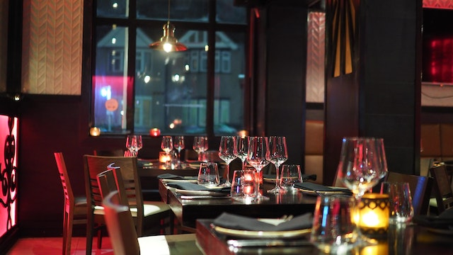
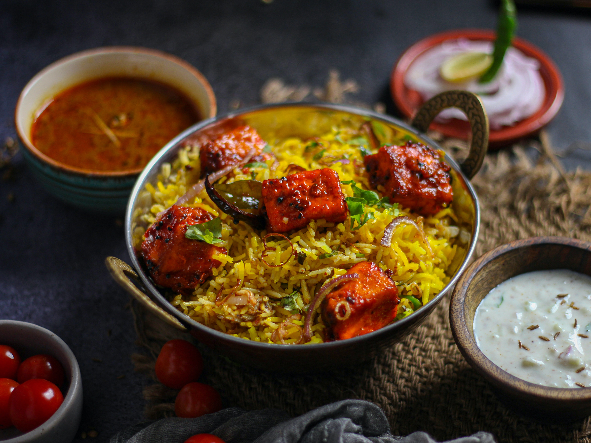
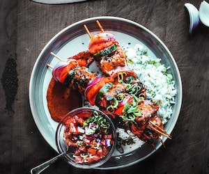
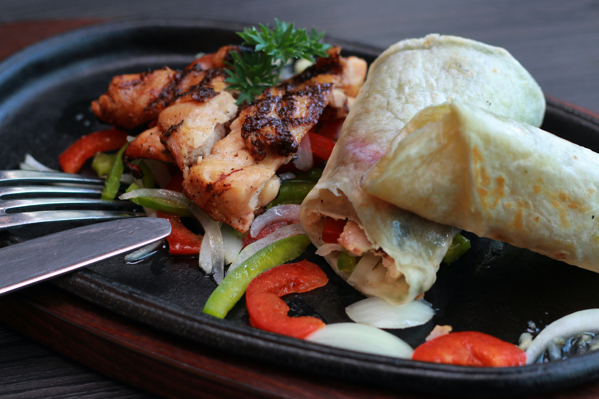

Gallery








welcome TO
About us
Welcome to Signature Cuisine, a culinary haven where flavors, traditions, and coastal beauty converge to create an unforgettable dining experience. For years, we have been serving a delectable array of dishes, showcasing the vibrant essence of Sri Lankan cuisine, complemented by Indian delicacies and a harmonious blend of international flavors.
Nestled near the idyllic coastal lines of western Sri Lanka in Wattala, our restaurant is a gateway to the freshest catches from the nearby fishing town of Negombo. Our commitment to using locally sourced ingredients ensures that every dish is a celebration of the region's bountiful produce and rich culinary heritage.
Led by our talented chefs, we combine time-honored techniques with a creative touch, infusing each dish with the aromatic spices and distinctive flavors that make Sri Lankan cuisine truly exceptional. From mouthwatering poultry and succulent prawns to the prized Sri Lankan crabs, our menu offers a tantalizing range of options, each prepared with a choice of mild or fiery spices to suit your palate.
For those seeking convenience, our set menus cater to busy executives, offering a selection of expertly curated dishes to alleviate work pressure. Additionally, we are pleased to accommodate group reservations for work lunches and private functions, with tailored menus available upon prior booking.
Gallery
Contact
Contact
with us
+94 11 789 4561 / +94 123 4567
100/1 Wellawatte-Colombo,
Colombo 06
Srilanka
Every day 11.00am to 11.00pm